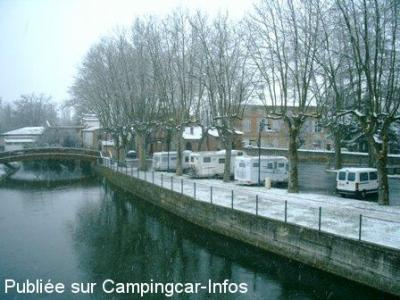
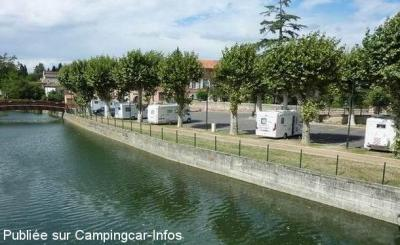
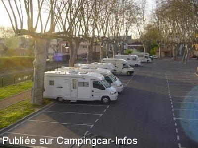
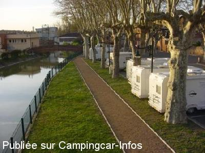
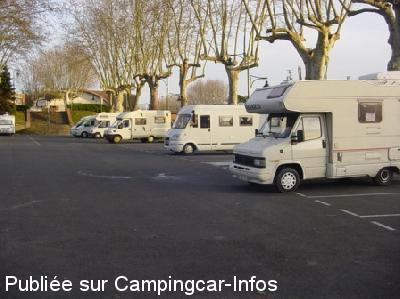

APN = Parking toléré jour/nuit de :
AUTERIVE
(N° 397)
Accès/adresse :
Rue des Docteurs Basset
31190 AUTERIVE
31190 AUTERIVE
Latitude : (Nord) 43.3519° Décimaux ou 43° 21′ 6′′
Longitude : (Est) 1.47632° Décimaux ou 1° 28′ 34′′
Tarif : Gratuit
Services :


Proche des commerces et de la rivière
Autres informations :
Ouvert toute l'année
Plusieurs parkings ombragés en centre ville

Le 04/01/2011 par Correcaminos

Le 24/08/2010 par Tof de Hauconcourt

Le 01/02/2009 par clicservice

Le 01/02/2009 par clicservice

Le 01/02/2009 par clicservice*
de
Anemone 66
le 02/07/2015 :
Nous nous arrêtons régulièrement sur cette aire car elle se trouve sur une zone de passage. Elle n'est pas trop mal, mais c'est un parking commun avec les voitures avec tout ce que cela comporte. La dernière fois que nous y sommes passés, plus de place pour les camping caristes car il y avait une fête. Elles se sont libérées après 18 Heures.L'aire de vidange se trouve de l'autre côté de la route à environ 350 mètres. Elle est loin d'être bien aménagée et il faut encore "faire" avec les voitures...
Nous nous arrêtons régulièrement sur cette aire car elle se trouve sur une zone de passage. Elle n'est pas trop mal, mais c'est un parking commun avec les voitures avec tout ce que cela comporte. La dernière fois que nous y sommes passés, plus de place pour les camping caristes car il y avait une fête. Elles se sont libérées après 18 Heures.L'aire de vidange se trouve de l'autre côté de la route à environ 350 mètres. Elle est loin d'être bien aménagée et il faut encore "faire" avec les voitures...
de
jpedro
le 26/11/2013 :
Pour répondre à Alain et Gilles, les services existent mais à quelques centaines de mètres, l'aire de service est distincte du parking, les coordonnées sont sur CCI, mais sur une autre fiche.
Pour répondre à Alain et Gilles, les services existent mais à quelques centaines de mètres, l'aire de service est distincte du parking, les coordonnées sont sur CCI, mais sur une autre fiche.
de
Alain et Gilles
le 19/03/2013 :
Extrémement mal indiqué donc introuvable même avec le GPS qui nous guide dans la bonne rue et pas d'aire visible !!! Avons du passer notre chemin
Extrémement mal indiqué donc introuvable même avec le GPS qui nous guide dans la bonne rue et pas d'aire visible !!! Avons du passer notre chemin
de
Gérard
le 29/03/2012 :
§
Le marché ne se faisant plus sur ce parking mais la grande place de l'autre coté de la rivière vous pouvais vous y reposer a n'importe qu'elle date
§
Le marché ne se faisant plus sur ce parking mais la grande place de l'autre coté de la rivière vous pouvais vous y reposer a n'importe qu'elle date
de
andre sieurac
le 08/03/2012 :
La ville est agréablement animée, et la position décalée du parking, permet de passer la nuit (et meme la journée) en toute tranquillité
Camping cariste, et résident dans cette ville, je peux témoigner que le nombre de touristes qui la pratiquent au quotidien prouve son agrément, et justifie son existence
La ville est agréablement animée, et la position décalée du parking, permet de passer la nuit (et meme la journée) en toute tranquillité
Camping cariste, et résident dans cette ville, je peux témoigner que le nombre de touristes qui la pratiquent au quotidien prouve son agrément, et justifie son existence
de
GD
le 05/10/2009 :
C'est un parking en plein centre ville avec une route juste à coté, avec un trafic intense, des WC impraticables. Bref, une aire qui ne devrait pas être référencée sur ce département!
C'est un parking en plein centre ville avec une route juste à coté, avec un trafic intense, des WC impraticables. Bref, une aire qui ne devrait pas être référencée sur ce département!